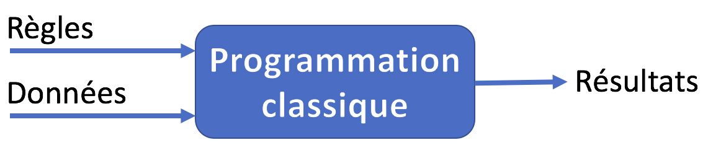
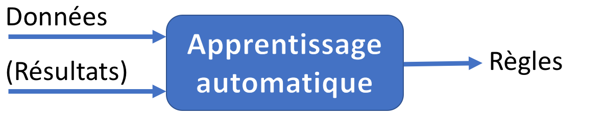
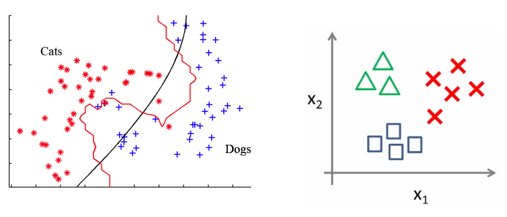
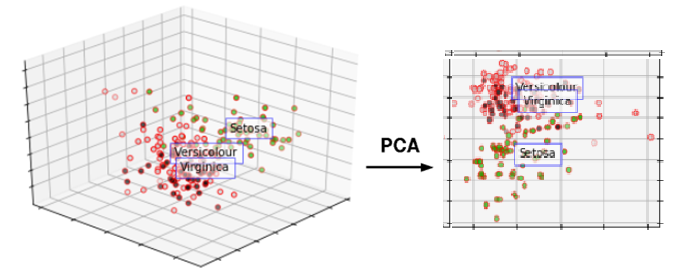
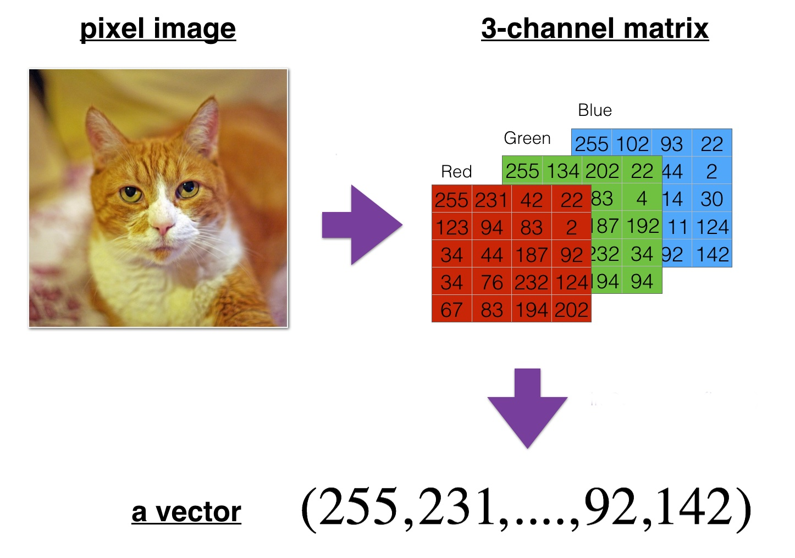
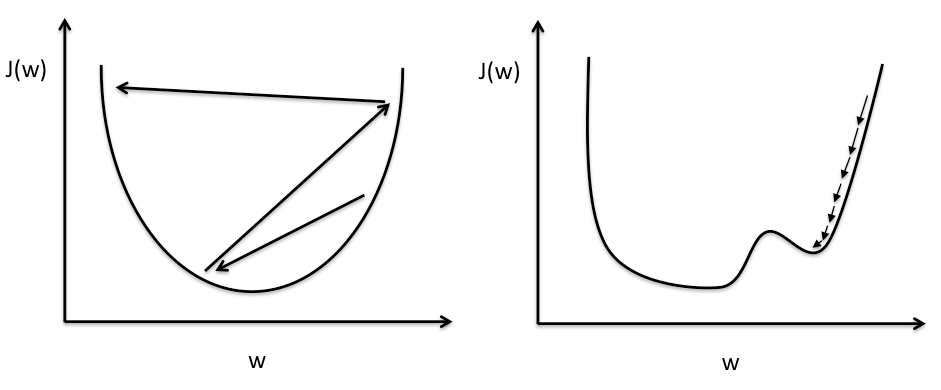
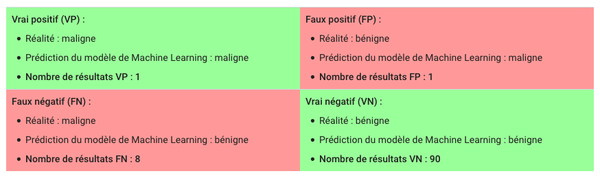
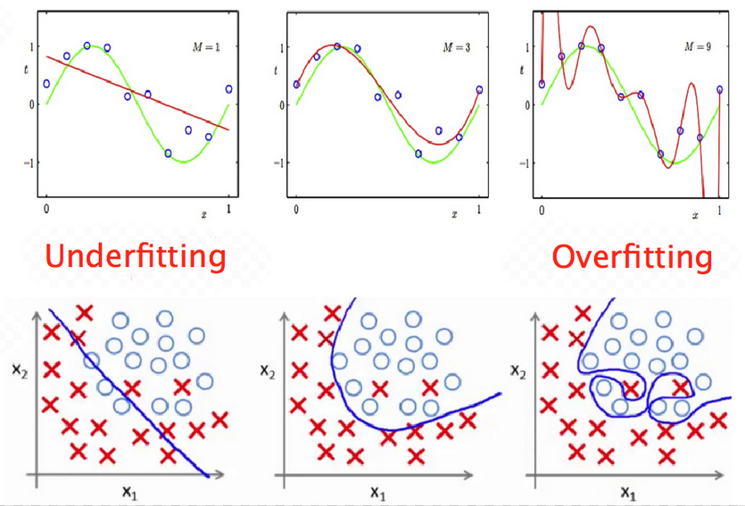

Les fondamentaux du Machine Learning
Ecole Nationale Supérieure de Cognitique

Sommaire
- Introduction au Machine Learning
- Anatomie d’un système de ML supervisé
- Les étapes d’un projet de ML
Introduction au Machine Learning
La première définition
“The field of study that gives computers the ability to learn without being explicitly programmed” (Arthur Samuel, 1959).
Des machines qui apprennent ?
Le Machine Learning ou apprentissage automatique regroupe un ensemble de techniques (algorithmes) permettant à des machines de s’entraîner sur des bases d’exemples pour :
- Identifier ou catégoriser des éléments
- Détecter des tendances
- Faire des prévisions
Leurs performances s’améliorent avec l’expérience.
Un nouveau paradigme



Critères de classification
Les systèmes de Machine Learning peuvent être catégorisées selon :
- Le type de supervision pendant l’apprentissage.
- La capacité à apprendre incrémentalement.
- La construction ou non d’un modèle pour faire des prédictions.

Apprentissage supervisé
Les résultats à obtenir sont fournis avec les données d’entraînement.
Ces données sont dites étiquetées (taguées).
Régression
Le système prédit des valeurs continues.

Classification
Le système prédit des valeurs discrètes : il catégorise les entrées.

Exemples
- Régression : prix d’un bien immobilier, prévision de températures, âge d’une personne.
- Classification binaire (0 ou 1) : chat/non chat, spam/non spam, tumeur maligne/bénigne.
- Classification multiclasses : chat/chien/autre animal, reconnaissance de chiffres, catégorisation de tweets.
Apprentissage non supervisé
Les données sont fournies sans les résultats à obtenir.
Le système doit découvrir par lui-même une éventuelle structure dans ces données.
Clustering
Le système partitionne les données en groupes.

Détection d’anomalies
Le système détecte les exemples anormaux (”outliers”).

Réduction de dimensionnalité
Le système projette les données dans un espace de moindre dimension.

Apprentissage par renforcement
Les décisions du système lui procurent une récompense qu’il cherche à maximiser.
Apprentissage Batch Vs Online
Capacité (ou non) du système à apprendre incrémentalement, à partir de nouveaux examples.
Extraits du livre Hands-on Machine Learning with Scikit-Learn & TensorFlow par A. Géron
Prédictions basées sur les exemples Vs sur un modèle

Extraits du livre Hands-on Machine Learning with Scikit-Learn & TensorFlow par A. Géron
Anatomie d’un système de ML supervisé
Les éléments d’un système de ML supervisé
- Des données.
- Un modèle capable de transformer les données en résultats.
- Une fonction de perte (loss) qui mesure l’écart entre les résultats fournis par le modèle et ceux attendus.
- Un algorithme d’optimisation pour modifier les paramètres du modèle en vue de minimiser sa perte.
Terminologie et notation
- Etiquette (label ou target) : résultat qu’on souhaite prédire, noté
$ y $. - Caractéristique (feature) : propriété d’une donnée, notée
$ x_i $. - Exemple (sample) : instance de donnée particulière comprenant un ensemble de
$ n $caractéristiques, notée$ x = \left\{ x_1, x_2, \dotsc, x_n \right\} $. - Un exemple peut être étiqueté (associé au résultat attendu) ou non.
Vectorisation des données
Pour des raisons de performance, les données sont souvent fournies au modèle sous la forme d’une matrice (samples, features) notée $ X $ contenant les $ m $ exemples.
$$X = \begin{bmatrix}
\ x^{(1)}_1 & x^{(1)}_2 & \cdots & x^{(1)}_n \\
\ x^{(2)}_1 & x^{(2)}_2 & \cdots & x^{(2)}_n \\
\ \vdots & \vdots & \ddots & \vdots \\
\ x^{(m)}_1 & x^{(m)}_2 & \cdots & x^{(m)}_n
\end{bmatrix}\;\;
y = \begin{pmatrix}
\ y^{(1)} \\
\ y^{(2)} \\
\ \vdots \\
\ y^{(m)}
\end{pmatrix}$$
Exemple : prix immobiliers
| Surface (m2) | Nombre chambres | Age (années) | Code Postal | Prix (k€) |
|---|---|---|---|---|
| 145 | 6 | 32 | 33600 | 380 |
| 85 | 3 | 45 | 33700 | 290 |
| 210 | 7 | 12 | 33400 | 740 |
| … | … | … | … | … |
| 110 | 4 | 22 | 33000 | 410 |
Matrice des données d’exemple

Format des données
- Cas général : matrice de la forme (samples, features)
- Images : tenseur 4D de la forme (samples, height, width, color_channels)
- Vidéos : tenseur 5D de la forme (samples, frames, height, width, color_channels)
Elles doivent être fournies au modèle sous forme numérique. En fonction du modèle utilisé, une étape préalable de vectorisation peut s’avérer nécessaire.

Rôle du modèle
- Il définit la relation entre les caractéristiques et l’étiquette.
- Il est constitué de paramètres, représentés sous forme d’un vecteur noté
$ \theta $. - Son résultat calculé est noté
$ y' $ou$ \hat{y} $.
$$y' = \begin{pmatrix}
\ y'^{(1)} \\
\ y'^{(2)} \\
\ \vdots \\
\ y'^{(m)}
\end{pmatrix}$$
Cycle de vie du modèle
On distingue deux phases (répétables).
- Apprentissage : à partir des exemples qu’on lui présente, le modèle apprend progressivement les relations entre les caractéristiques et l’étiquette.
- Inférence : on utilise le modèle entraîné pour faire des prédictions.
La fonction de perte (loss)
- Elle mesure l’écart entre les résultats attendus, souvent appelés ground truth, et ceux calculés par le modèle.
- Pour un dataset donné, elle est uniquement fonction des paramètres du modèle.
- Son choix dépend du type d’apprentissage.
Fonctions de perte pour la régression
- Mean Absolute Error (MAE, aka L1 loss) :
$\mathcal{L}(\theta) = \frac{1}{m}\sum_{i=1}^m |y'^{(i)} - y^{(i)}|$ - Mean Squared Error (MSE, aka L2 loss) :
$\mathcal{L}(\theta) = \frac{1}{m}\sum_{i=1}^m (y'^{(i)} - y^{(i)})^2$ - Root Mean Squared Error (RMSE) :
$\mathcal{L}(\theta) = \sqrt{\frac{1}{m}\sum_{i=1}^m (y'^{(i)} - y^{(i)})^2}$
Fonction de perte pour la classification binaire
- La valeur attendue
$ y^{(i)} $vaut soit 0, soit 1. - Le résultat calculé
$ y'^{(i)} $correspond à une probabilité (valeur entre 0 et 1).
Binary Crossentropy : $$\mathcal{L}(\theta) = -\frac{1}{m}\sum_{i=1}^m \left[y^{(i)} \log(y'^{(i)}) + (1-y^{(i)}) \log(1-y'^{(i)})\right]$$
Classification multiclasses
$ y^{(i)} $et$ y'^{(i)} $sont des vecteurs. Leur nombre d’éléments est égal au nombre de classes$ K $.$ y^{(i)}_k $vaut 1 si la classe du ième exemple est$ k $, 0 sinon.$ y'^{(i)} $est un vecteur de probabilités.
$$y = \begin{bmatrix}
\ y^{(1)}_1 & \cdots & y^{(1)}_K \\
\ y^{(2)}_1 & \cdots & y^{(2)}_K \\
\ \vdots & \ddots & \vdots \\
\ y^{(m)}_1 & \cdots & y^{(m)}_K
\end{bmatrix}\;\;
y' = \begin{bmatrix}
\ y'^{(1)}_1 & \cdots & y'^{(1)}_K \\
\ y'^{(2)}_1 & \cdots & y'^{(2)}_K \\
\ \vdots & \ddots & \vdots \\
\ y'^{(m)}_1 & \cdots & y'^{(m)}_K
\end{bmatrix}$$
Fonction de perte pour la classification multiclasses
Categorical Crossentropy : $$\mathcal{L}(\theta) = -\frac{1}{m}\sum_{i=1}^m\sum_{k=1}^K y^{(i)}_k \log(y'^{(i)}_k)$$
(équivaut à la Binary Crossentropy quand $ K = 2 $)
Algorithme d’optimisation du modèle
- Il correspond à la phase d’apprentissage.
- Son objectif : minimiser la perte.

Extrait du cours d'introduction au Machine Learning de Google
Une approche itérative
Les paramètres du modèle sont mis à jour itérativement jusqu’à atteindre un optimum.
Extrait du cours d'introduction au Machine Learning de Google
La descente de gradient
- Utilisée pour optimiser plusieurs modèles de ML, dont les réseaux de neurones.
- Principe : mettre à jour les paramètres du modèle par petites étapes dans la direction inverse du gradient de la fonction de perte, jusqu’à converger vers un minimum de cette fonction.
La notion de gradient
- Variation d’une fonction par rapport à la variation de ses différents paramètres.
- Vecteur dont les composantes sont les dérivées partielles de la fonction par rapport à chacun de ses
$ n $paramètres.
$$\nabla_{\theta}\mathcal{L}(\theta) = \begin{pmatrix}
\ \frac{\partial}{\partial \theta_1} \mathcal{L}(\theta) \\
\ \frac{\partial}{\partial \theta_2} \mathcal{L}(\theta) \\
\ \vdots \\
\ \frac{\partial}{\partial \theta_n} \mathcal{L}(\theta)
\end{pmatrix}$$
Descente de gradient avec un seul paramètre

Gradient pour deux paramètres

Descente de gradient avec deux paramètres

Types de descentes de gradient
- Batch Gradient Descent
- Stochastic Gradient Descent
- Mini-Batch SGD
Batch Gradient Descent
Gradient calculé sur l’ensemble des données avant mise à jour des paramètres.
- Avantage : simple et sûr
- Inconvénient : lent voire inutilisable pour de gros volumes de données
Stochastic Gradient Descent
Gradient calculé sur une seule donnée prise au hasard avant mise à jour des paramètres.
- Avantages :
- Rapide
- Autorise l’apprentissage à partir de nouveaux exemples (online learning)
- Inconvénients :
- Risque de ne pas converger
- Pas de vectorisation des calculs
Mini-Batch SGD
Gradient calculé sur une petite quantité de données prise au hasard avant mise à jour des paramètres.
- Combine les avantages des deux précédents
- Méthode par défaut pour de nombreuses librairies de ML
Echelle de taille du mini-batch : entre 10 et 1000 examples.
Ajustement des paramètres du modèle
Taux d’apprentissage ou learning rate $ \eta $ : facteur d’ajustement des paramètres en fonction du gradient de la fonction de perte.
$$\theta_{next} = \theta - \eta\nabla_{\theta}\mathcal{L}(\theta)$$
Importance du learning rate

Le problème des minima locaux


Les étapes d’un projet de ML
Démarche générale
- Cadrer le problème
- Analyser et préparer les données
- Sélectionner et entraîner un modèle
- Affiner le modèle
- Mettre le modèle en production
1. Cadrer le problème
- Quel est l’objectif métier ?
- Quelles sont les solutions actuelles ?
- Quelles sont les données à disposition ?
- Le problème à résoudre est-il adapté au ML ?
- Quel est le type d’apprentissage envisagé (supervisé/non supervisé, batch/online, etc) ?
- Comment évaluer la performance du modèle ?
Problèmes bien adaptés au ML
- Règles d’action difficiles à décrire ou à codifier
- Données complexes pour les méthodes analytiques traditionnelles :
- Nombre de caractéristiques très important
- Données fortement corrélées
- Performance > explicabilité
Mesures de performance pour la classification
Afin de pouvoir réaliser des prédictions, les probabilités calculées par le modèle sont transformées en valeurs discrètes grâce à des seuils.
Mesure standard : justesse (accuracy).
$$\text{Justesse} = \frac{\text{Nombre de prédictions exactes}}{\text{Nombre total de prédictions}} $$
Faux positifs, faux négatifs
- Contexte : un berger qui crie “Au loup !”.
- “Présence d’un loup” = classe positive, “Absence de loup” = classe négative.
Matrice de confusion extraite du cours d'introduction au Machine Learning de Google
Limites de la justesse en présence de classes déséquilibrées

$\text{Justesse} = \frac{VP + VN}{VP + VN + FP + FN} = 91\%$
Mais 1 seule tumeur maligne détectée sur 9 !
Précision et rappel
- La précision mesure la proportion d’identifications positives correctes.
- Le rappel (recall) mesure la proportion de résultats positifs réels identifiés correctement.
$$\text{Précision} = \frac{VP}{VP + FP}\;\;\;\;
\text{Rappel} = \frac{VP}{VP + FN}$$
Précision et rappel sont souvent en tension.
2. Analyser et préparer les données
La qualité des données est fondamentale pour le succès d’un système de ML.

Opérations sur les données
- Explorer et visualiser les données est essentiel pour mieux appréhender le problème.
- Afin de mieux valider le modèle, on sépare toujours les données en plusieurs groupes.
- Les données réelles, souvent incomplètes ou bruitées, doivent être nettoyées, formatées et éventuellement enrichies avant d’être utilisables.
Histogramme des valeurs des caractéristiques pour le jeu de données World Happiness 2017
Entrainement, validation et test
La capacité d’un modèle entraîné à généraliser (être performant avec des données inconnues) est essentielle.
Afin de garantir cette capacité, les données sont partitionnées en 2 ou 3 groupes (sets) :
- Entraînement : pour la phase d’apprentissage (entre 60 et 98% des données).
- Validation : pour affiner le modèle.
- Test : pour vérifier les performances du modèle.
Exemples de partitions des données
# Assuming x is a (1000, features_count) matrix
# Randomize samples order
np.random.shuffle(x)
training_x, val_x, test_x = x[:800, :], x[800:900, :], x[900:, :]
# training_x is a (800, features_count) matrix
# val_x and test_x both are (100, features_count) matrices
from sklearn.model_selection import train_test_split
# Using sk-learn's predefined function train_test_split
X_train, X_test, y_train, y_test = train_test_split(X, y, test_size=0.25)
K-fold Cross Validation
Utilisée quand les données sont trop peu nombreuses pour créer un validation set significatif.

Nettoyage et formatage des données
Nécessaire avant de fournir les données au modèle.
- Suppression des caractéristiques superflues.
- Ajout des valeurs manquantes.
- Conversion sous forme numérique.
- Normalisation.
- Etiquetage si besoin.
Normalisation des données
Afin de faciliter l’apprentissage, les données doivent :
- Etre homogènes
- Avoir de faibles valeurs
# Assuming x is a (samples, features) matrix
x -= x.mean(axis=0) # center data
x /= x.std(axis=0) # reduce data
# x now has a mean of 0 and a standard deviation of 1
Enrichissement du dataset
- Nouvelles caractéristiques (feature engineering).
- Nouveaux exemples (data augmentation).

3. Sélectionner et entraîner un modèle
- Le choix d’un modèle dépend du type d’apprentissage (supervisé/non supervisé, etc).
- Pour chaque type, il existe plusieurs modèles de ML, plus ou moins complexes (k-NN, régression linéaire ou logistique, réseaux de neurones, etc).
- Il est conseillé de commencer avec un modèle basique et rapide à entraîner :
- Utile comme base d’évaluation.
- Peut se révéler performant.
Les hyperparamètres
- Ce sont les paramètres du modèle définis par l’utilisateur.
$ \neq $paramètres (modifiés automatiquement pendant l’apprentissage).- Exemples : learning rate, taille du mini-batch, nombre de couches pour un réseau de neurones, etc.
- Leur modification impacte les résultats du modèle.
- Objectif : trouver la meilleure combinaison possible.
L’entraînement du modèle
- Phase empirique et itérative.
- Objectif : obtenir un modèle qui overfitte les données d’entraînement.

Optimisation/généralisation

Biais et variance
- Underfitting (biais). Sous-performance sur les données d’entrainement.
- Overfitting (variance). Ecart entre les performances sur les données d’entrainement et de validation.

4. Affiner le modèle
- Phase empirique et itérative, basée sur les résultats de validation.
- Objectif : concilier optimisation et généralisation.
- Une visualisation graphique des résultats est précieuse.
- En partie automatisable avec certaines librairies de ML.
- Ne pas utiliser le jeu de données de test !
5. Mettre le modèle en production
- Le modèle entraîné puis affiné peut être sauvegardé sous différents formats.
- On peut ensuite le déployer sur une machine dédiée, un serveur web (accès via une API) ou sur un terminal mobile type smartphone.
- Il peut être intégré à un système plus important qui utilise ses services.